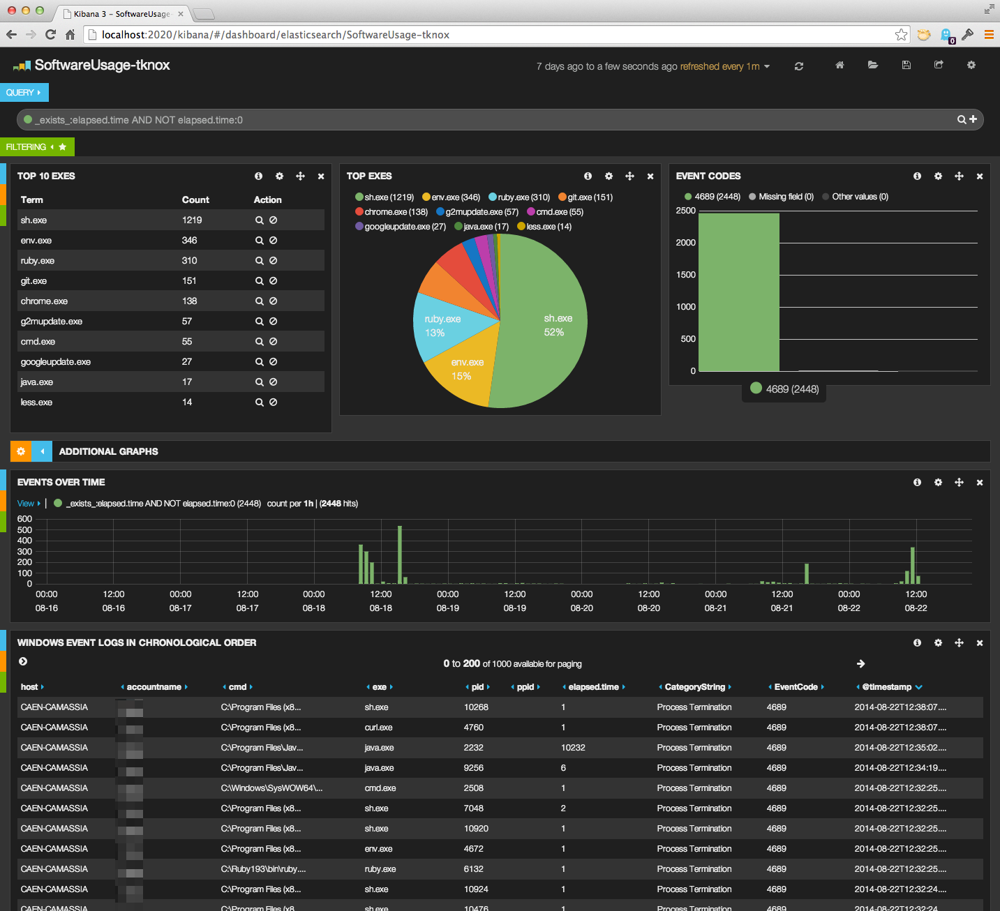
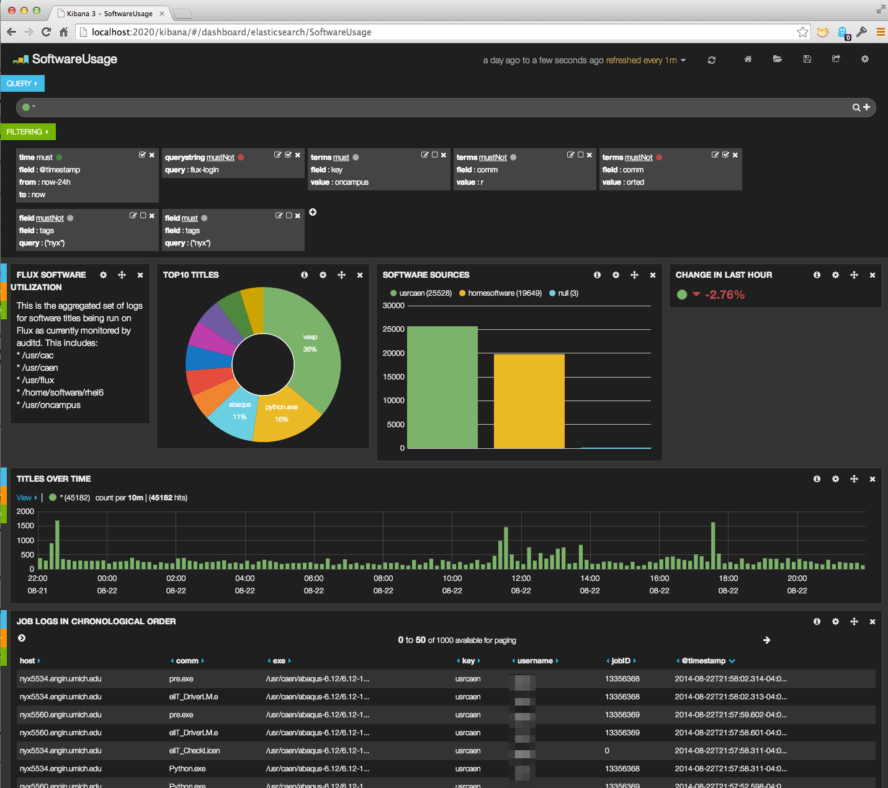

The Kibana interface lets you create charts and tables out of various pieces of data in Elasticsearch. It also allows you to filter data into or out of the current set and query that data for specific terms or Booleaned1 sets of terms.

Figure 1: Kibana Representation of Software Usage on one Windows Computer
On this screen you can see the ten most commonly launched binaries,
with sh.exe as the most common. (This particular Windows desktop
computer is used by one of the CAEN staff and mostly for integration
testing, and runs git commands a lot of the time, which is why you
see this particular set of binaries being popular.) The same “Top 10”
data is shown in a pie chart.
The list of “Events Over Time” shows how frequently programs are started in one hour increments. The peak on this graph is just over 500 binary launches in an hour at 4:00pm on 8/18.
There is also a list of all of the binaries launched, by computer, person, process identifier, and (for processes that are ending) their elapsed time.

Figure 2: Kibana Representation of Software Usage on our HPC Cluster
The screen of the software usage data from the HPC cluster shows some similar information (top 10 executables, table of title details, frequency of launches) and two other pieces of information:
auditd and indexed by Elasticsearch. Because we
install different types of software in different locations, we
can get a sense of the types of software commonly used by
looking at this
Version 3 of Kibana doesn’t support aggregations (similar to SQL
JOIN statements), but Version 4 is predicted to, and aggregations
are still possible using JSON-structured queries sent directly to the
Elasticsearch servers.
If that isn’t a verb, it really should be.